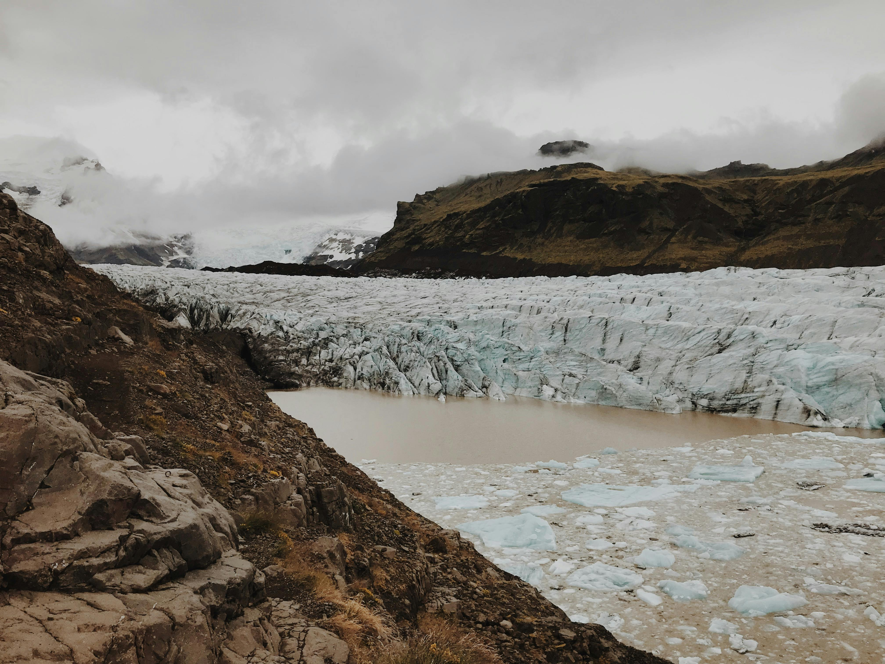

National Strategies
Biodiversity Conservation

Protected Areas: Establishing and managing national parks, wildlife reserves, and other protected areas to preserve critical habitats and species.
Endangered Species Protection: Implementing programs to protect and recover threatened and endangered species.
Sustainable Land Use

Agricultural Practices: Promoting sustainable agriculture to reduce deforestation, soil degradation, and water usage.
Forestry Management: Encouraging sustainable forestry practices to balance timber production with conservation.
Habitat Restoration
Reforestation and Afforestation: Planting trees to restore degraded forests and increase forest cover.
Wetland Restoration: Rehabilitating wetlands to enhance biodiversity and ecosystem services.
Combating Desertification

Soil Conservation: Implementing soil conservation techniques to prevent erosion and maintain soil fertility.
Water Management: Enhancing water conservation and management to combat desertification and support agriculture.
Climate Change Mitigation

Carbon Sequestration: Promoting practices that enhance carbon sequestration in forests and soils.
Climate Resilience: Developing strategies to help ecosystems and communities adapt to the impacts of climate change.